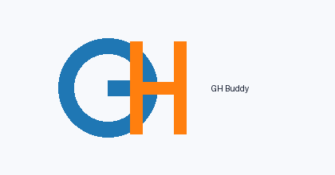

University Project Report
Authors: GH Team (friends' initials G and H)
Project: Retrieval-Augmented Generation Assistant for Students
GH Buddy is a student-focused RAG chatbot that retrieves information from uploaded study material and answers questions using context-grounded generation. The system supports dual model routing (Google Gemini and Hugging Face), local vector retrieval with ChromaDB, and an interactive Streamlit interface. The design objective is reliable and friendly support for common academic queries while maintaining transparent source referencing.
Students usually keep course information in different formats: PDF syllabi, DOCX notes, text summaries, and external web links. This fragmentation makes quick revision difficult, especially before exams or assignments. GH Buddy solves this by building a searchable personal knowledge base and combining retrieval with AI generation.
flowchart TD
A[User Uploads Files/URLs] --> B[Document Loader]
B --> C[Text Chunking]
C --> D[Embedding Model all-MiniLM-L6-v2]
D --> E[ChromaDB Vector Store]
F[User Query] --> G[Retriever Top-k]
G --> E
G --> H[Prompt Builder]
H --> I{Model Toggle}
I -->|Gemini| J[Google Gemini API]
I -->|Hugging Face| K[HF Inference API]
J --> L[Answer + Sources]
K --> L
The system follows a modular architecture where each layer (ingestion, embedding, retrieval, generation, and UI) can be upgraded independently.
| Layer | Tool | Purpose | Why Selected |
|---|---|---|---|
| Frontend | Streamlit | Chat UI and ingestion controls | Fast prototyping and deployment |
| Document Parsing | PyPDF2, python-docx, BeautifulSoup | Extract text from files/URLs | Simple, reliable, open source |
| Chunking | LangChain RecursiveCharacterTextSplitter | Split long text into overlapping chunks | Preserves context continuity |
| Embeddings | sentence-transformers/all-MiniLM-L6-v2 | Semantic vector representation | Strong quality-to-speed tradeoff |
| Vector Store | ChromaDB | Persistent similarity search | Easy local setup and metadata support |
| LLM Backend | Gemini + Hugging Face | Answer generation | Flexible model routing/fallback |
| Ops | Docker + GitHub Actions | Reproducibility and CI | Portfolio-ready workflow |
sequenceDiagram
participant U as Student
participant S as Streamlit UI
participant V as ChromaDB
participant M as Model API
U->>S: Ask question
S->>V: Retrieve top-k chunks
V-->>S: Relevant contexts + sources
S->>M: Prompt with grounded context
M-->>S: Generated answer
S-->>U: Answer + source citations
500 size, 50 overlap).all-MiniLM-L6-v2../chroma_db.requirements.txt..env API keys.python generate_sample_data.pypython generate_logo.pypython generate_report.pystreamlit run src/app.pydocs/screenshots/chat_placeholder.png).docs/screenshots/sidebar_placeholder.png).data/syllabus.pdfdata/python_notes.docxPrint to PDF: Open this HTML in a browser and press Ctrl+P, then Save as PDF.